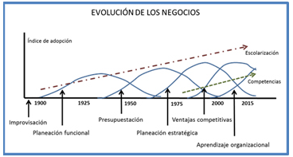
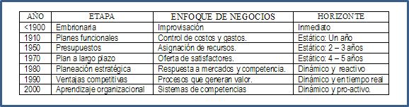
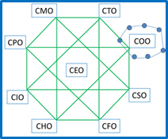
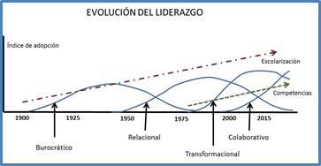

Artículos de interés
Evolución de los negocios
Las empresas evolucionan aprendiendo y aprenden evolucionando
En el siglo XIX los negocios se improvisaban. En los comienzos del XX se establecieron controles de funciones y gastos y se introdujeron algunas metodologías de trabajo (P50-1). Hacia mediados de ese siglo se planeaba la asignación de recursos con horizontes de dos a tres años y solo hasta los años de 1970 se amplió el horizonte de planeación a cinco años pero todavía con un enfoque de producto (P50-2). En la década de 1980 se introdujo la planeación estratégica, con un enfoque dinámico aunque reactivo (P50-3). Cuando la globalización era una realidad y la competencia se recrudeció en los años de 1990, las empresas se enfocaron a los procesos que generan valor, para ganar ventajas competitivas (P50-4). Al inicio del siglo XXI el aprendizaje organizacional era indispensable en un entorno dinámico y pro-activo (P50-5).

Esta evolución sigue el aprendizaje organizacional. Primero es el impacto del grado de escolaridad con el que cuentan las personas al incorporarse a la organización (P50-6). Después son las competencias genéricas que van desarrollando conforme la organización aprende (P50-7).
(Imagen P50-8).La planeación funcional se basa en controles de costos y gastos y horizontes estáticos de un año. La elaboración de presupuestos ya contempla horizontes estáticos de dos a cinco años, aunque todavía está orientada a la oferta del producto. La planeación estratégica se orienta hacia las necesidades de mercado y respuestas a la competencia en horizontes dinámicos pero todavía reactivos. El desarrollo de ventajas competitivas se basa en los factores críticos para el éxito y en procesos que generan valor en horizontes dinámicos y en tiempo real. El aprendizaje organizacional se fundamenta en sistemas de competencias medulares una visión sistémica y ocurre en horizontes dinámicos y pro-activos.

Hace apenas algunas décadas, el trabajo de la mayoría de las personas consistía en seguir órdenes y realizar las tareas que se les asignaban. Los jefes repartían estas tareas, las cuales encajaban en una rutina predecible de la organización. Este era el enfoque mecanicista.
Hoy en día, la mayoría de los puestos de trabajo se han vuelto auto-dirigidos y ya no hay rumbos previsibles. Hay menos jefes que dan instrucciones, se han eliminado niveles jerárquicos y se ha prescindido de mandos medios. Este es el enfoque orgánico.
Un organigrama tradicional con enfoque mecanicista se transforma en un octagrama con enfoque orgánico cuando las funciones son representadas en los vértices del modelo. (Secuencia P25) Con el enfoque orgánico se logra mayor eficiencia y los gerentes se responsabilizan de un tramo de control más amplio. La toma de decisiones está más descentralizada y la mayoría de los empleados actúan por su cuenta casi todo el tiempo. Antes, los empleados eran reprendidos por no consultar con sus superiores antes de tomar una decisión. Hoy lo son por no mostrar suficiente iniciativa.
En el ambiente orgánico triunfan los que tienen capacidad para aprender, innovar, responsabilizarse y correr riesgos. Las competencias que antes fueron críticas sólo para los altos ejecutivos, ahora son indispensables para todos. Obviamente en ningún oficio se puede tener éxito si se carece de las destrezas técnicas necesarias, pero hoy los empleados también tienen que desarrollar competencias transversales.

Conforme las organizaciones jerárquicas basadas en el comando y el control se transformaban en ecosistemas organizacionales con conexiones hacia afuera y no hacia adentro, se necesitaban también nuevas formas de liderazgo. En la década de 1920, cuando existía la planeación funcional con un enfoque de control de costos y gastos, el liderazgo era burocrático, basado en tendencias y comportamientos de la gente (P50-9).
En la década de 1960, la mentalidad abarcaba plazos más largos y los presupuestos también y así emergió un liderazgo relacional, basado en la motivación y la confianza (P50-10).
El auge de la planificación estratégica con el énfasis en las ventajas competitivas en el entorno dinámico de los años ochenta y noventa, exigía un liderazgo transformacional, basado en una visión compartida y una cultura organizacional robusta (P50-11).
Hoy en día, con la expansión de las redes sociales y con cambios organizacionales más vertiginosos, el liderazgo tiene que ser colaborativo, distribuido y basado en el aprendizaje (P50-12). Los gerentes modernos se precian de manejar ellos mismos el cambio para aprovechar la ventaja competitiva en los mercados. Las compañías tienen que reaccionar con mayor rapidez y urgencia, lo cual ha descentralizado aún más la toma de decisiones.

El líder de hoy sondea el entorno, buscando los problemas y posibles soluciones. Tiene iniciativa y la confianza para asumir un papel de liderazgo. Mide la oportunidad y actúa con decisión: es ejecutivo. Se conecta, crea redes de contactos y funciona como atractor de ideas. Se desempeña como un coach que ayuda al desarrollo de las personas. Crea reglas simples e implanta una mentalidad estratégica.